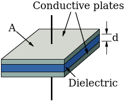

Make your own parallel plate capacitor

Stick a square piece of aluminium tape on either side of a piece of butter paper. Ensure that the two plates do not touch each other along the edges, and are separated by the butter paper.
Connect one plate to SEN, and the other to GND, and measure the capacitance.
Now cut this capacitor along the center, such that the area is reduced by half, and measure capacitance again.
Study how capacitors behave in combination
Measure the values of the capacitors by individually connecting them between CAP and GND, and note these.

In Parallel
Connect the two capacitors in parallel as shown below, and observe the combined capacitance. Ctotal = C1+C2.

In Series
Now connect them in series, and measure the net capacitance

Calculate net capacitance of capacitors connected in series.
Screenshot